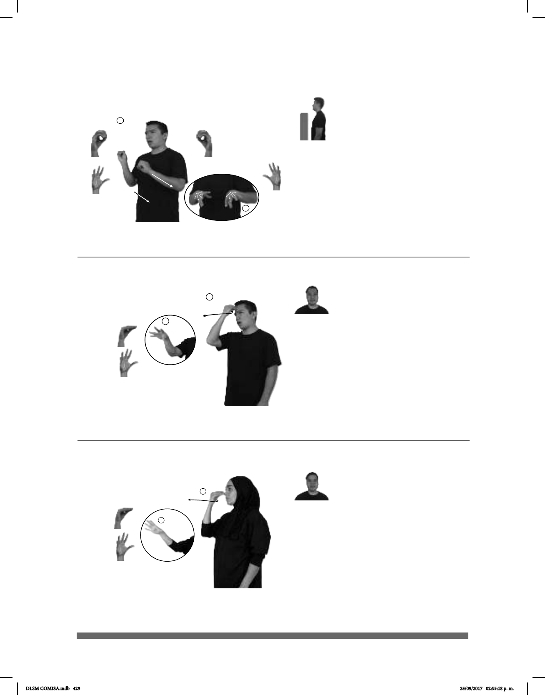

429
Seña: SB
MD y MB O.1, II. 5.4
Palmas oblicuas hacia
afuera y hacia la izquierda.
MD y MB a la altura del
pecho.
Movimiento: MD y MB recto hacia la
izquierda, los dedos se extienden
simultáneamente.
Cabeza
ligeramente hacia la derecha, lengua
hacia afuera.
v. tr. Dejar algo o a alguien
sin cuidado o sin atención.
Seña: SM
Seña que pasa de O.5
a 5.4
Palma hacia adentro.
Sobre la frente.
Movimiento: La mano se
mueve formando el número siete y los
dedos se extienden simultáneamente.
Lengua hacia
afuera.
v. tr. Dejar algo o a alguien
sin cuidado o sin atención.
(O-4) Abandonar (A)
(O-5) Abandonar (B)
dm-ANA pos-SUYO
de ella
PERRO ABANDONAR YA
Ana abandonó a su perro.
YA MÉXICO NACIONAL pos-MÍ PAPÁ pro-DOS-DE-NOSOTROS-ABANDONAR-a-mí
Mi papá nos abandonó en México.
Seña: SM
O.9 y II. 5.4
La palma inicia hacia
adentro y termina hacia afuera.
De la nariz a la mejilla.
Movimiento: Los dedos se
extienden.
Lengua
hacia afuera.
v. tr. Dejar por desdeño
una actividad o persona.
: Esta seña connota
una actitud despectiva
(O-6) Abandonar (C)
pos-SU HIJO él-ABANDONAR-a-él
Él abandonó a su hijo.
DLSM COMISA.indb 429 25/09/2017 02:55:18 p. m.